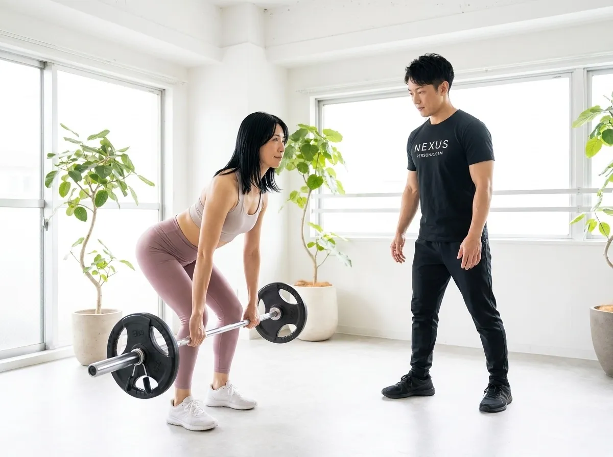
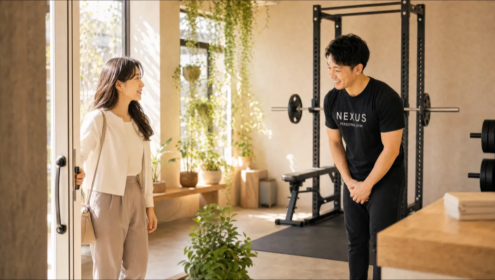
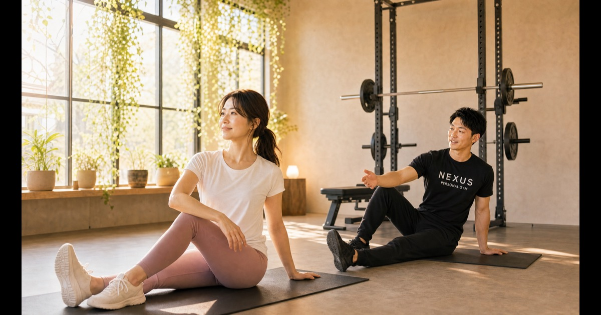
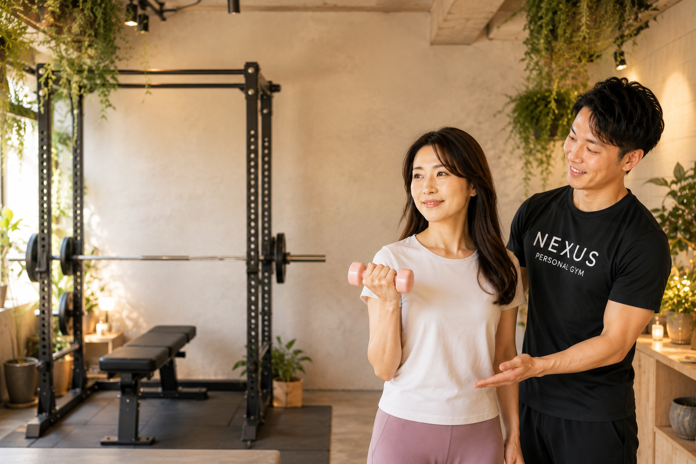
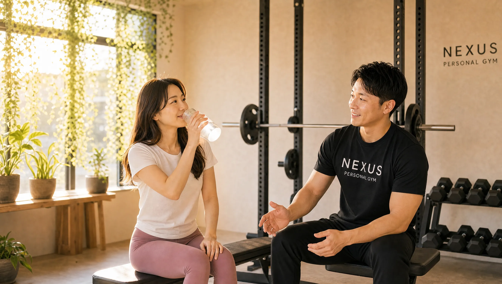
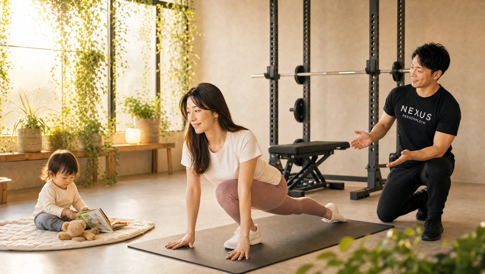
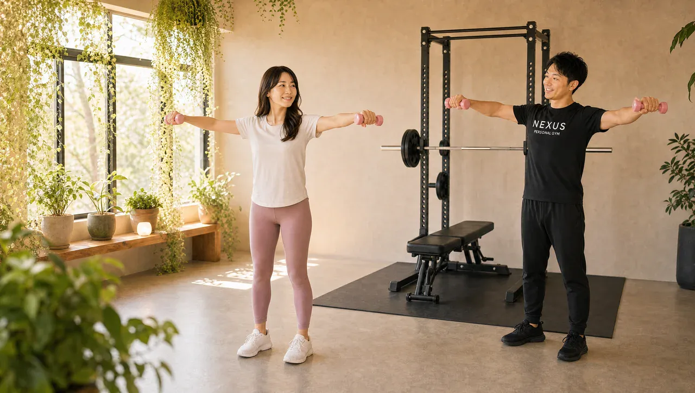

最新の記事
結婚式までに痩せたい花嫁へ｜ブライダル集中プラン【全国71店舗】
挙式日から逆算するNEXUSのブライダル集中プラン。60分24回＋食事指導付き192,000円〜。完全個室・女性会員85%、全71店舗で受付中。
読む →薬で食欲が落ちている時期に何を食べる？ジム経営者が自分の体で決めた「少ししか食べられない日」の食事
量が半分なら順番を変える。主菜→野菜→主食の型、食べられない日の液体での対処、避けたい食べ方、医師に相談する線引きまで。

プロテインはいつ飲む？朝・筋トレ後・寝る前の正解を、ジム経営者が現場の結果で答える
タイミングより1日の合計。1回だけなら朝食が軽い人は朝。ゴールデンタイムの真実、飲まなくていい人の条件まで。

パーソナルジムは週1回でも効果ある？ジム経営者が見た「週1で結果が出た人・出なかった人」の違い
週1でも3か月で体重の3〜5%は落ちる。差がつくのはジム以外の6日間。家で10分・食事報告・曜日固定の3つまで。

マシンピラティスの体験で見るべき5つのこと｜ジム経営者が教える「通っても変わらないスタジオ」の見分け方
見るのは設備より人と仕組み。直された回数・声かけの中身・料金と頻度の合わせ方・勧誘の仕方まで、体験1回で見抜く基準。

産後のパーソナルジムはいつから？ジム経営者が答える「始めてよい時期」と最初の3か月でやること
目安は1か月健診の許可後、本格的な筋トレは3か月以降。帝王切開の場合、授乳中の食事指導、最初の3か月の順番まで。
マシンピラティスは痩せる？ジム経営者が見た効果の現実と、痩せた人がやっていたこと
見た目は変わる。体重はそれだけでは動きにくい。痩せた人の共通点、ジムに切り替えるサイン、両方やる順番まで正直に。

薬で痩せた後に筋肉を守る食事と運動｜ジム経営者が自分の体で試して分かったこと
「痩せたのにたるむ」を防ぐ。食事量が減った中でタンパク質を確保する組み方、週2回でいい筋トレの中身、有酸素運動の落とし穴まで。

16時間断食と筋トレは両立する？ジム経営者が見た「痩せる人・筋肉が落ちる人」の分かれ目
両立の条件は「食べる8時間の中身」。筋トレを入れる位置、タンパク質の総量、断食を夜に寄せる組み方まで。

置き換え食・完全食はダイエットに使える？ジムの現場で「使える人・失敗する人」の分かれ目
結果が出るかは商品ではなく使い方で決まる。使える3つの場面、失敗パターン、裏面で見る3つの表示まで。

パーソナルジムで痩せない人の共通点。辞めていく人の傾向から分かること
原因の大半は体質でも努力不足でもなく「仕組み」。食事報告・来店回数・測り方・睡眠の6つの差を現場目線で。

パーソナルジムの入会金・総額の相場。「安い」の裏にある料金の仕組みを運営側が説明します
2か月の総額の中心は25万〜40万円。入会金の正体、月額制と回数制の違い、見積もりで確認する5項目まで。

パーソナルジムとピラティス、痩せたいならどっち？ジム経営者が「ピラティスの方がいい人」も正直に書く
体重を落とすならジム、姿勢・産後・運動が苦手ならピラティス。目的別の向き不向きを運営側が正直に比較。

GLP-1をやめた後にリバウンドする人・しない人の違い。ジムの現場で見ている分かれ目
戻るかどうかは「使っている間」で決まる。筋肉の材料・食べ方の型・運動の予定、3つの分かれ目を現場目線で。

プロテインより先に食物繊維。痩せない人がまず足りていないもの
「食事は気をつけている」のに痩せない人に共通する食物繊維不足。体重・便通・食欲との関係を現場目線で。

トレーナーが会員に勧めるプロテインの選び方。ジム経営者が本音で書く「買う前に見る3つ」
勧めるのは「一番良いもの」ではなく「続けられるもの」。タンパク質量・価格・味の3つの見方と続く仕組み。

GLP-1で13kg痩せた私が、ジム経営者としてあえて言うこと
85kgから72kgへ。「食欲が落ちる」の本当の意味、活力を失った日々、筋肉がつかなかった理由を正直に。

パーソナルジムは2ヶ月で何キロ痩せる？加盟店オーナーが現実的な数字を正直に話します
現実的なラインは「今の体重の5〜8%」。体重別の目安、落ちやすい人・落ちにくい人の違いまで。

足利でパーソナルジムを探す人が比較すべき3つのポイント
車社会の足利市ならではのジム選び。料金の総額・トレーナーの質・立地×営業時間の3軸で解説。

雑色駅から通えるパーソナルジムの選び方
蒲田まで出る前に。京急沿線・大田区六郷エリアで徒歩圏のジムを見つける3つの比較軸。
武蔵新田のパーソナルジム｜仕事帰りに続けられる3つの条件
やめる理由は「時間」ではなく「順番」。帰宅ルート上で続けられるジムの条件。
新江古田でパーソナルジムを始める前に知っておきたいこと
「高い」「厳しい」「経験がない」。初めての3つの不安は、店舗選びの段階で解消できます。
緑地公園のパーソナルジム｜主婦・ママが通いやすいジムの条件
平日昼間に予約できる、キャンセルが効く、総額が明確。崩れた週に戻れる設計かどうか。

パーソナルジムが続かない7つの理由と、続く人がやっている対策
続かないのは意志ではなく仕組みの問題。7つの理由と対策、継続率96%のNEXUSの違いを実際の口コミとともに解説。

月額8,000円〜のパーソナルジム「NEXUS」徹底紹介｜女性に選ばれる隠れ家ジム
女性会員85%・完全個室・手ぶらOK。全国の隠れ家パーソナルジムNEXUSを徹底紹介。無料体験実施中。

パーソナルジムが続かない人の5つの共通点
入会前の段階で、続く人・続かない人はほぼ決まっている。71店舗の現場で観察した5つのパターン。

産後ダイエット、いつから始めていい？医師確認＆体験談
産後2〜3ヶ月目が目安。71店舗の現場で見た判断基準と3つの体験事例。

30〜40代女性のための「無理なく続く」ダイエットルーティン
共働きで時間がない毎日でも、無理なく続けられるダイエット習慣を、NEXUSのトレーナー監修でお届けします。